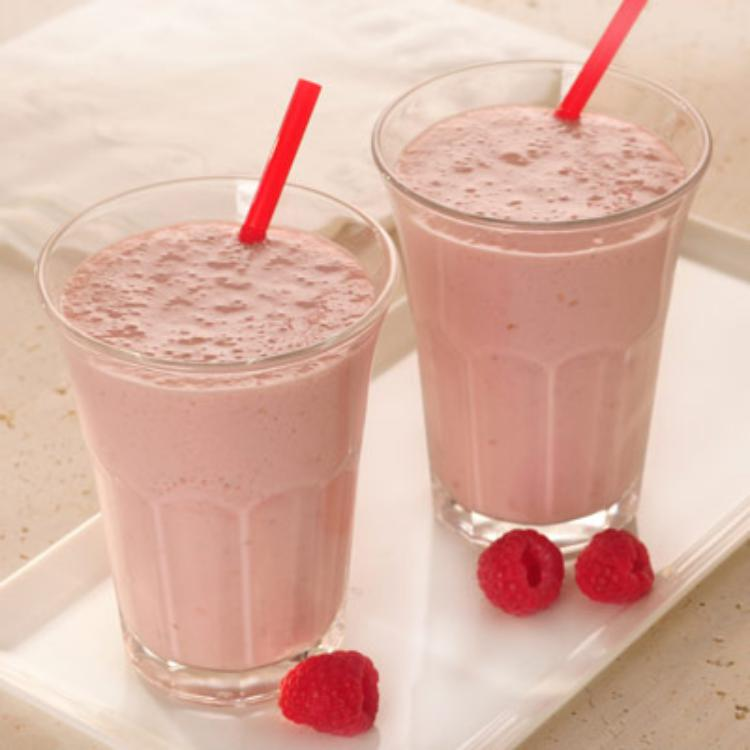

Three Ingredient Smoothie

Description
This 3-ingredient healthy smoothie is made with only berries, milk and yoghurt. Healthy smoothie here we come!
Ingredients
- 1 cup cut-up, fresh or frozen fruit or berries of choice
- 2/3 cup (5 fluid-ounce can) NESTLÉ® CARNATION® Evaporated Lowfat 2% Milk
- 1/2 cup (6-ounce container) lowfat vanilla yogurt or yogurt of choice
Steps
- Place fruit or berries, evaporated milk and yogurt in blender; cover. Blend until smooth. Immersion blenders can also be used.